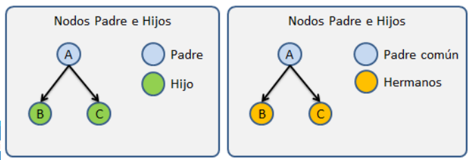
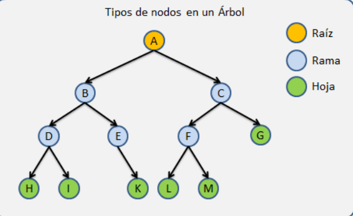
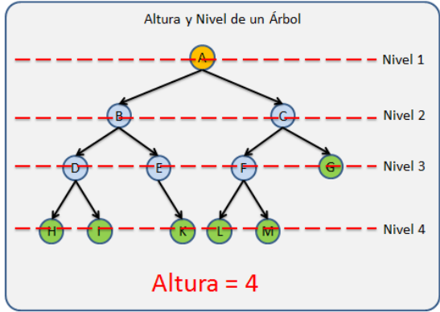
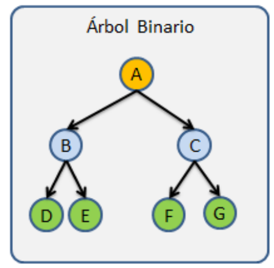
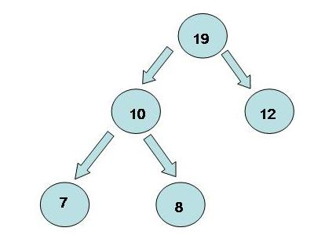

Definición
Los árboles son muy utilizados en informática como un método eficiente para búsquedas grandes y complejas.Casi todos los sistemas operativos almacenan sus archivos en árboles o estructuras similares a árboles.
Los árboles son muy utilizados en informática como un método eficiente para búsquedas grandes y complejas.Casi todos los sistemas operativos almacenan sus archivos en árboles o estructuras similares a árboles.






Ejemplo de árboles aplicado a la vida real.
Aquí aparecerá la información.